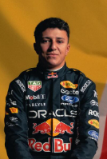

Isack Hadjar
Isack Hadjar
Team: Red Bull Racing
Team Principal: Laurent Mekies
Number: 6
Nationality: France
Debut: 2026
Born: 28 September 2004
History: French-Algerian driver Isack Hadjar emerged from the Red Bull Junior Team as one of the most naturally aggressive and exciting talents of his generation. After standout performances in Formula 2 and Racing Bulls, Hadjar earned promotion to Red Bull Racing thanks to his raw speed, fearless overtaking, and strong qualifying pace. Entering 2026, he was viewed as one of the sport’s most unpredictable and entertaining young drivers, with significant expectations surrounding his long-term development at the top level.
